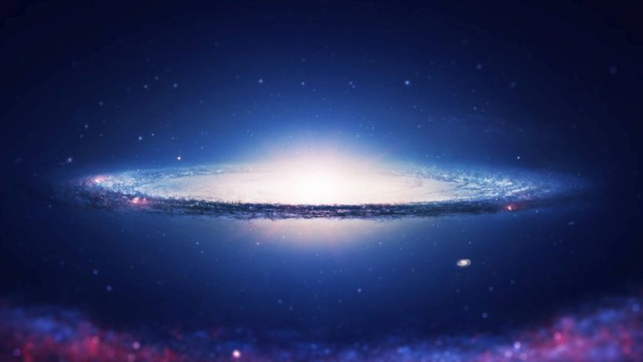

Cosmos as field of creation
What can we know about life elsewhere in the Universe ?
Limits of our perception, ability to know and imagination
Must life out-there be humanlike? What could be the motivation for extra-terrestrials ?…their needs, value and their sense for ethics ?
Alien sensory system-modes of understanding —languages-communication– their motivators and what is their notion of the meaning and way of life. Can we expect to have anything in common with the Usul people that inhabit the Nurul star-cluster?
Other weird alien stuff-postulating unimaginable stuff about aliens-within the bounds of human perception – reason – understanding – imagination
Is the Universe a designed field of production? , which would suggest a –plan > planner> production instrument (Universe) and a desired end-product, foreseen, and maybe not yet realized, cause currently still out of the grasp of our capacity of reason.
Could certain regions of the Universe be underpinned and structured by different constellations of archetypes than the body of archetypes, that our region has as an all-determining matrix underneath? Ruling our cosmic local environment and our physiology/psychology.? That means that we can only imagine life within the given archetypal forms and thus boundaries of our existence.
If the same static and dynamic group of archetypes that underpin our (physical-biological-psycho-spiritual) reality is constellated elsewhere in the Universe in the same manner–then one can expect the existence of humans like us. Same psychology-subject to same innate drives, and a similar natural biological and geophysical environment corresponding to it.
Far far away in the Universe–in the future–Year 27220
We know that we became the conscious humans we are today. We also know that we still have to become much more conscious-aware individuals. We developed from being group people -guided and living by instinct and intuition (‘how to do and navigate life’-a knowledge, that is given by nature). Now our personal progress and further evolution is dependant on paying attention to and taking into the natural creative factors -the archetypes- that are present and active within the unconscious of the collective and each individual
New archetypes will rise in the future and will have their profound effect on us.
Can we fathom what our psychological and spiritual life will be —-25000 years ahead? We will not have changed much biologically, because that’s very much determined to our natural environment.
Does the creating Universe have other desired goals in ‘mind’ and seeks these to be realized with aid of other aliens -not similar like us ,within it?
Is it reasonable to assume that the Spirit within its field of creation-the Universe- seeks only the creation of conscious awareness (through us)? Or are there elsewhere (other) archetypes active in different constellations -producing other new attributions to the creative Divine. New creations – creatures – abilities, which are beyond our imagination, out of reach of our perception and reason —and that are totally alien to our nature? If so–then the physicality of these life forms and the evolutionary environment must be very different from ours.
Could it be that we and our ability of conscious awareness, even including knowledge of the Spirit itself, be the main (and only ?) goal of life elsewhere in the Universe? Then….
Then He brought Abraham outside and said, “Look now toward heaven, and count the stars if you are able to number them.” And He said to him, “So shall your descendants be.” Genesis 15:5
Modesty guarantees an open and inquisitive mind.
We can empirically know that the creating spirit is One and a multiplicity at the same time. This is shown by the interconnectedness of life in external nature and the activity within the unconscious part of our psyche shows. Who is the CEO in all this keeping the parts together or not, within One whole?
[ In development ….
Archetypes as universal structural elements;-Matter – life — living matter, materialized life–— ((Did life take matter, did matter create life. Is life energy that through matter took a material form? or is it a chunk of matter that brought itself to life?—))–Archetypes–Substance–Life Matter vv–any arch form any where–creating other forms
Why was the Universe created–came into existence ?
Why can’t people see God?, somebody asked an old Rebbe.
His answer: ‘Because people don’t bow deep enough.‘

sombrero-galaxy